MFP的绘图函数，既可以在基于安卓的可编程科学计算器中运行，也可以在台式机或者笔记本电脑上基于JAVA的可编程科学计算器中运行，并且运行效果完全一样。为了文档撰写的方便，在本教程文档中，所有的例子给出来的示例图都是在基于JAVA的可编程科学计算器中运行得到的结果，但是用户把代码拷贝到安卓上面运行，也可以得到相同的图像。
本教程文档中，给出了调用可编程科学计算器绘图的很多实例，由于这些实例都只需要调用一次MFP语言的绘图函数，也就是用一条MFP语句实现，所以，本教程文档中的所以例子都实现在不带参数的函数::mfpexample::plotGraphs函数中。该函数的代码可以在绘图示例压缩包中的graph libs目录下的examples.mfps文件中找到。用户可以解压缩该示例压缩包，然后把graph libs目录拷贝到基于JAVA的可编程科学计算器目录的scripts子目录下，然后在MFP提示符下运行mfpexample::plotGraphs()，即可看到全部图形。
绘制表达式图像对用户来讲是最简单的一种绘图方式，相当于打开智慧计算器，输入表达式，然后点击绘图按钮。对表达式绘图，用户不用管绘制图形的范围，因为这个范围在图像绘制完成之后可以由用户动态调整，也不用管图像的颜色，标题，点或线的形态，这些由函数根据表达式的个数，特征自动地设置，更不用管绘制的图像的类型（是二维，三维还是极坐标图像），这个由函数根据变量的个数自动地加以判断。
MFP提供的绘制表达式的图形的函数为plot_exprs，具体用法如下：
函数plot_exprs分析最少1条，最多8条表达式以绘制2维或者3维图形（取决于表达式中未知变量的个数）。输入的表达式可以是一个等式，比 如"4*x+9 == y +z**2"和"log(x*y) == x"，也可以是一个左侧为未知变量的赋值表达式，比如"k= 3+ 7 * sin(z)"，还可以是一个可以被看作为赋值表达式的表达式，比如"9*log(y)"可以被看作"x = 9 * log(y)"。注意所有表达式中未知变量的总数不多于3，每一条表达式中的未知变量的个数不能少于未知变量的总数减一。未知变量的起始范围可以在设置中设定，缺省是从-5到5，但是使用者可以在图形绘制出来之后动态调整每个未知变量的范围。如果有两个未知变量并且其中一个是希腊字母α、β、γ或者θ，则 绘制极坐标图形而不是普通2维图形。本函数的一个例子是plot_exprs("4*x+sin(y)", "x*lg(x)/log2(z)==y"), "4-y**2==(x**2 + z**2)")。需要指出的是，如果是绘制二维隐函数表达式，这个函数最多能绘制出4个表达式解；如果绘制的是3维隐函数表 达式，这个函数会根据情况，可能会求每一个变量的最多两组解，绘制出最多6个解表达式图形，这样一来，整个求解绘图过程会花费比较长的时间。并且，由于plot_exprs函数有内在的，最多绘制8条曲线（面）的限制，对隐函数绘图时，一个隐函数就可能需要6条曲面来绘制，所以，plot_exprs的参数不能包含太多的隐函数表达式，否则会报出无法绘制太多曲线的错误。
比如，用户想在同一幅图上绘制两条曲线如下：
f(x) = ln(x) + 2 x - 6
以及
g(x) = x3 + 0.9 x
，调用函数时，注意到这两个表达式都并非隐函数，所以，表达式参数不必输入f(x)和g(x)，只用输入纯表达式部分（这里是等号右边的部分）既可。
但是，要注意MFP的表达式，操作符，包括乘号和函数调用时的括号，不可以省略，所以，表达式在MFP中必须写为ln(x)+2*x-6，而应该写成x**3+0.9*x，注意在MFP中，次方符号是**而不是^。
最后，由于plot_exprs输入的参数必须为字符串，所以不要忘记给表达式加上引号，整个函数的调用语句为（第一种调用方法）：
plot_exprs("ln(x)+2*x-6", "x**3+0.9*x")
用户也可以将函数的调用语句写为（第二种调用方法）：
plot_exprs("y==ln(x)+2*x-6", "x**3+0.9*x==y")
，或者（第三种调用方法）：
plot_exprs("y=ln(x)+2*x-6", "y=x**3+0.9*x")
。第二种和第三种调用方法都设定了y变量，这里的y变量指的是待绘图的表达式在y坐标轴上的值，相当于待绘图的表达式中的f(x)和g(x)。使用单一的y变量而不是两个不同的变量（比如yf和yg）来代表f(x)和g(x)的原因在于，我们希望在同一张图上绘制这两个表达式，所以f(x)和g(x)的值的投影都在同一个坐标轴（也就是y代表的坐标轴）上。如果用两个不同的变量分别代表f(x)和g(x)，意味着f(x)和g(x) 的值的投影在不同的坐标轴上，这样就不是绘制二维曲线，而是三维曲线了。
用户可能还注意到，在第二种调用方法中，我们使用的是等号（==），y既可以在等号的左边，也可以在等号的右边；而在第三种调用方法中，我们使用的是赋值号（=），y只能在赋值号的左边。这种要求完全符合MFP的规则——我们可以让一个表达式等于某个变量的值（变量和表达式分置等号两侧，不管谁左谁右），或者把表达式的值赋给某个变量（变量位于赋值号的坐标，表达式位于右边），但我们不能够把变量的值赋给表达式。
函数绘制出来的图像如下。用户可以拖动图像对图像进行上下左右的平移，也可以点击放大缩小按钮来对图像进行缩放，注意，无论平移还是缩放，都会造成绘图范围发生变化，一些点将会被重新计算，所以如果是在手机上运行，用户可能会感觉到时延，如果图像很复杂，计算量很大，用户甚至可能会觉得有点卡。但在电脑上，对这些图像的处理，应该是轻而易举。
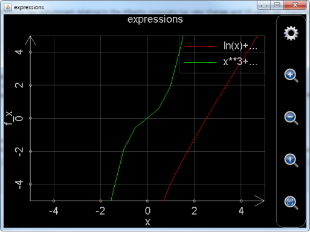
图1： 调用plot_exprs函数绘制表达式二维图形。
用户可能还会觉得，绘制出的图像，特别是绿色的曲线，不够平滑。这时就需要点击图上的齿轮按钮，对图像设置进行调整，点击齿轮按钮后出现的设置对话框参见下图。图中，红色长方形圈出的部分的左边用于设定绘制图形的步数，也就是在绘制范围内计算多少个点，步数越多，图像越平滑，但计算花费的时间越长，用plot_exprs函数绘制二维图像，缺省步数为20步；红色长方形圈出的部分的右边用于设定是否自动侦测奇异点，显然，侦测奇异点需要花费更多的计算时间，用plot_exprs函数绘制二维图像，缺省是不侦测奇异点的。如果用户用智慧计算器作图，缺省步数为100步，并且会自动侦测奇异点，所以，智慧计算器做出的表达式图像会更平滑，更逼真，当然，这也是有时候用户抱怨用智慧计算器作图比较“卡”的原因。
图2： 设置二维图像。
再比如，我们想绘制如下表达式的图像：
r2 = α2 + 9
r = cos α
α = sin r
则可以调用函数
plot_exprs("r**2==α**2+9","r==cos(α)","α==sin(r)")
或者写成
plot_exprs("r**2==α**2+9","cos(α)"," sin(r)")
在这里，r==cos(α)和α==sin(r)的左侧变量和等于号都可以省略，MFP会根据三个表达式所包含的总的变量个数和名称将表达式cos(α)和sin(r)自动补全，但r**2==α**2+9的任何一个部分都不能省略，原因是r**2==α**2+9是隐函数等式。
函数绘制出来的图像如下。由于表达式中含有希腊字母α，并且总的未知变量的个数为2，所以最终绘制出来的图像是极坐标图形。注意下图已经对图像进行缩小处理，并且绘图步数也增加到200，否则图像会比较难看。
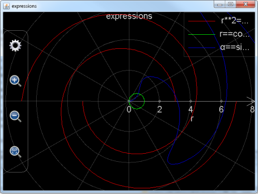
图3： 调用plot_exprs函数绘制表达式极坐标图形。
用户还需注意的是，在调整极坐标图形绘制范围的时候，幅值（也就是r）方向的绘制范围会发生改变，但是幅角（也就是α）的绘制范围永远是从-2*pi到2*pi，不会发生改变。这也符合极坐标图形的特点：放大缩小图像不会对幅角的范围有任何影响。
再给出绘制三维图形的例子。比如用户想绘制出一个椭球体
x2 + 2 y2 + z2 = 20
，和一个切割球体的曲面
，则输入的表达式为
plot_exprs("x**2+2*y**2+z**2==20","z=ln(3*x**2+y**2+2*y+2)*sin(x*y/10)")
或者省去非隐函数的变量部分（如上所述，隐函数任何部分都不能省略）
plot_exprs("x**2+2*y**2+z**2==20","ln(3*x**2+y**2+2*y+2)*sin(x*y/10)")
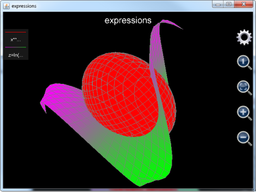
图4： 调用plot_exprs函数绘制表达式三维图形。
和二维图像类似，用户可以放大缩小图像，但是，用户用鼠标或者单个手指在图像按住并滑动不是拖动图像，而是旋转图像。所以，如果用户想要设置绘图范围，唯一的办法是点击齿轮按钮。点击齿轮按钮出现的设置对话框如下：

图5： 设置表达式三维图形。
在设置对话框中，红色矩形所包含的部分用于设置在各个坐标轴方向的绘图范围，绿色矩形所包含的部分为每个坐标轴方向上的步数，也就是每个坐标轴方向上计算并绘制多少个点，蓝色举行所包含的部分为设置是否隐藏坐标轴和标题，以方便用户观察图像。注意在1.6.7版以前，用户只能选择同时隐藏坐标轴和标题或者同时显示坐标轴和标题，默认状态为显示坐标轴和标题；从1.6.7版开始，用户可以分开设置坐标轴和标题的隐藏或显示状态，默认状态为显示标题但隐藏坐标轴。
还要注意，如果是对隐函数作图，图像有可能只有一种颜色，而如果是对非隐函数作图，图像曲面的颜色是渐变的。但无论是哪种情况，用户都无法具体决定曲面使用哪种颜色。
最后给出另外一个绘制三维图形的例子：
plot_exprs("x**2-z**2==20","x**2-y**2==6")
，绘制的图形如下（坐标轴和标题已经隐藏）：
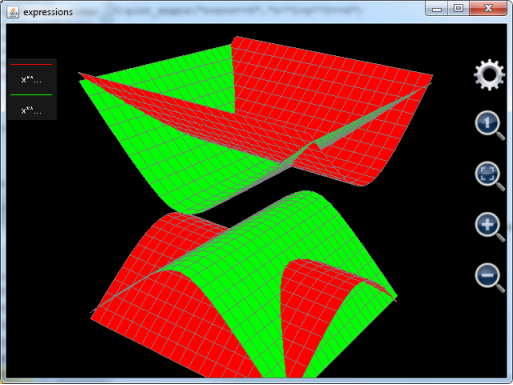
图6： 根据总的未知变量的个数绘制出三维图形。
。照道理来讲，x**2-z**2==20和x**2-y**2==6实际上都是二维曲线，如果调用plot_exprs分别单独绘制它们的图像，用户看到的是两条在二维平面上的双曲线。但是，由于这里plot_exprs要一起绘制这两个表达式，而这两个表达式中，总的变量的个数为3（包括x、y和z），所以，最后绘制的图像是三维的而不是二维的。
最后还要指出一点，plot_exprs函数是用MFP语言编写的函数，plot_exprs函数的各个参数（也就是待绘图的表达式）只是原封不动地传递给了更底层的函数。由于这个原因，用户在调用函数之前所定义的变量如果出现在plot_exprs的表达式中，plot_exprs函数不会自动地对其求值。比如用户定义了一个变量a，它的值为3，然后调用plot_exprs("x+a")绘制图形，MFP不会把"x+a"视为"x+3"而在二维平面上绘制出一条直线，MFP的做法是将a看作和x一样的一个变量而在三维空间中作出一个平面。所以，如果用户想动态地绘制x+a的图像，每次调用plot_exprs时，就要动态地更新表达式字符串，比如，可以调用plot_exprs("x+"+a)，这样，a当前的数值就会被自动地添加到字符串"x+"后面从而得到新的字符串为"x+3"。同样地，plot_exprs函数内部只能看到MFP的缺省引用空间，也就是顶级引用空间和::mfp以及其下级引用空间。调用plot_exprs的函数所能看到的引用空间无法传递到plot_exprs函数内部。这样一来，在调用plot_exprs的函数看来完全没有问题的函数参数，传递给plot_exprs后就可能会出现找不到函数的错误。比如用户自定义了一个引用空间，名字为::aaaaa，在这个引用空间内用户定义了一个函数叫做aaaaaF()，然后用户在调用plot_exprs作图之前通过using citingspace语句声明使用引用空间::aaaaa，但这个声明并不能够简化plot_exprs的调用，用户还是必须在plot_exprs的字符串参数中给出aaaaaF()函数的绝对路径，也就是，
plot_exprs("::aaaaa::aaaaaF(x)")
，而plot_exprs("aaaaaF(x)")则会出错，原因是在plot_exprs函数内部引用空间::aaaaa并不在搜索列表上。
除了plot_exprs，后面介绍的绘图函数，也有很多是用MFP编写然后调用更底层的函数的，所以，建议用户在绘制包含预定义变量的表达式的图像时，总是使用上述办法，并且在给出用户自定义函数的绝对引用空间路径，以保证代码的一致性。
绘制常规坐标系下的二维图形，MFP提供了以下函数：
|
函数名 |
函数帮助信息 |
|
plot2dex |
plot2dex(6...) : 函数plot2DEX调用plot_multi_xy以绘制由最多8条2-D曲线所构成的图像。其包括以下参数：1.图像名字（图像文件名）；2.图像标题；3.X轴标题；4.Y轴标题；5.图像背景色；6.是否显示网格；7.曲线标题；8.曲线数据点颜色；9.曲线数据点形状；10.曲线数据点大小；11.曲线连接线颜色；12.曲线连接线类型；13.曲线连接线粗细；14.t起始位置；15.t终止位置；16.t的间隔；17.以t为变量的X的表达式；18.以t为变量的Y的表达式...。其中，每增加一条新的曲线，需要添加12个参数（也就是参数7到18），最多定义8条曲线。另外要注意图像背景色，曲线数据点的大小，曲线连接线颜色以及曲线连接线类型还没有被实现，曲线连接线粗细仅支持0（意味着没有连接线连接数据点）和非0（意味着有连接线连接数据点）。本函数的一个例子为：plot2DEX("chart 3", "3rd chart", "x", "y", "black", true, "cv1", "blue", "x", 2, "blue", "solid", 1, -5, 5, 0.1, "t", "t**2/2.5 - 4*t + 6", "cv2", "red", "square", 4, "square", "solid", 1, -10, 10, 0.1, "5*sin(t)", "10*cos(t)") 。 |
|
plot_2d_curves |
plot_2d_curves(6...) : 函数plot_2d_curves绘制由最多1024条2-D曲线所构成的图像。其包括以下参数：1.图像名字（图像文件名）；2.图像标题；3.X轴标 题；4.Y轴标题；5.图像背景色；6.是否显示网格（注意这个参数是一个字符串，其值为"true"或者"false"）；7.曲线标题；8.曲线数据 点颜色；9.曲线数据点形状；10.曲线数据点大小；11.曲线连接线颜色；12.曲线连接线类型；13.曲线连接线粗细；14.内部变量的名字（通常 为"t"）；15.内部变量的起始位置；16.内部变量的终止位置；17.内部变量的每一步变化间隔；18.基于内部变量的X的表达式；19.基于内部变 量的Y的表达式...。其中，每增加一条新的曲线，需要添加13个参数（也就是参数7到19），最多定义1024条曲线。另外要注意图像背景色，曲线数据 点的大小，曲线连接线颜色以及曲线连接线类型还没有被实现，曲线连接线粗细仅支持0（意味着没有连接线连接数据点）和非0（意味着有连接线连接数据点）。 本函数的一个例子为：plot_2d_curves("chart 3", "3rd chart", "x", "y", "black", "true", "cv1", "blue", "x", 2, "blue", "solid", 1, "t", -5, 5, 0.1, "t", "t**2/2.5 - 4*t + 6", "cv2", "red", "square", 4, "square", "solid", 1, "t", -10, 10, 0.1, "5*sin(t)", "10*cos(t)") 。 |
|
plot_2d_data |
plot_2d_data(16) : 函数plot_2d_data分析最少1组，最多8组数值向量，每组数值向量将会被绘制为一条曲线。输入的参数个数可以为1个（绘制一条曲线），2个（绘制一条曲线），4个（绘制2条曲线），6个（绘制3条曲线），8个（绘制4条曲线），10个（绘制5条曲线），12个（绘制6条曲线），14个（绘制7条曲线），16个（绘制8条曲线）。每一个参数都是一个数值向量（也就是一维矩阵）。如果只有一个参数，该参数中的每一个元素将会是绘制出的曲线中的一个点，否则，奇数号参数决定曲线中的每一个点的x值，偶数号参数决定每一个点的y值。注意决定x值的参数中包含的元素个数应该和决定y值的参数中包含的元素相同。函数例子包括plot_2d_data([5.5, -7, 8.993, 2.788])以及plot_2d_data([2.47, 3.53, 4.88, 9.42], [8.49, 6.76, 5.31, 0.88], [-9, -7, -5, -3, -1], [28, 42, 33, 16, 7])。 |
|
plot_multi_xy |
plot_multi_xy(2...) : plot_multi_xy(包含>=2个参数)用于绘制2维或极坐标图像，每个图像最多包括1024条曲线。参数1为图像名字，参数2为图 像设置，该参数是一个字符串，比如"chart_type:multiXY;chart_title:1 chart;x_title:x;x_min:- 6.2796950076838645;x_max:6.918480857169536;x_labels:10;y_title:y;y_min:- 4.487378580559947;y_max:4.1268715788884345;y_labels:10;background_color:black;show_grid:true"。 注意chart_type的值是multiXY（用于绘制二维图像）或者multiRangle（用于绘制极坐标图像），x_labels和 y_lables分别代表x和y轴上有多少刻度标记（对于极坐标图像是R轴有多少刻度标记，幅角的刻度标记不可设）。从参数3开始，每3个参数定义一条曲 线，在这3个参数中，第一个参数为曲线设置，第二个参数是包含所有x数值（或者R数值）的向量，第三个参数是包括所有y值（或者幅角值）的向量。曲线设置 参数为一个字符串，比 如"curve_label:cv2;point_color:blue;point_style:point;point_size:1;line_color:blue;line_style:solid;line_size:1"。 另外注意x和y的每一个数值都必须为实数，x和y的数值个数必须一致。本函数不返回数值。本函数的一个例子是 plot_multi_xy("chart2", "chart_type:multiXY;chart_title:1 chart;x_title:x;x_min:-6;x_max:6;x_labels:6;y_title:y;y_min:-4;y_max:4;y_labels:5;background_color:black;show_grid:true", "curve_label:cv2;point_color:blue;point_style:circle;point_size:3;line_color:blue;line_style:solid;line_size:1", [-5, -3, -1, 0, 1, 2, 3, 4, 5], [-3.778, -2.9793, -2.0323, -1.1132, 0.2323, 1.2348, 3.9865, 2.3450, 0.4356]) 。 |
其中，plot2dex和plot_2d_curves是用来在指定范围内会制2维表达式曲线，plot_2d_data用于绘制二维数据图像。Plot_multi_xy为更底层的函数，它被plot2dex和plot_2d_data函数所调用。
需要注意的是，plot_2d_curves是从1.6.7版中才将接口暴露给用户的函数，这个函数在1.6.6及其以前版本中也存在，但是绘制曲线数目最多只能有8条。从1.6.7版开始，plot_2d_curves可以绘制曲线的数目增加到1024条，并且由于plot_2d_curves由JAVA实现，速度远比plot2dEx快，强烈建议用户使用plot_2d_curves来取代plot2dEx。
以上4个函数，也包括从本节开始往后的所有绘图函数，和plot_exprs都有一个很大的区别。Plot_exprs绘制表达式图像时不设定绘图范围，而是根据用户平移缩放图像，动态地调整绘图范围，图像上的点在绘图范围调整时自动重新计算。而以上4个函数，也包括从本节开始往后的所有绘图函数，在图像生成的时候，绘图的范围已经确定，即便用户平移缩放图像，绘图的范围也不会改变，图像上的点也不会重新计算。由于这个原因，用户操作由这些函数绘制出来的图形，会很平滑，不会有“卡”的感觉。
Plot_2d_curves函数事实上就是安卓上的可编程科学计算器的独立的“绘制图形”-〉“绘制二维图像”工具的函数版。它所需要的参数中，前6个参数用于设置图像本身，分别为图像的文件名（文件扩展名.mfpc会被自动加上，不用用户输入），图像的标题，x轴的名字，y轴名字，背景色和是否绘制网格。注意，这些参数均为字符串，其中参数是否绘制网格为是一个字符串代表的布尔值（"true"或者"false"），而背景颜色所支持的字符串包括"white "（白色），"black"（黑色），"red"（红色），"green"（绿色），"blue"（蓝色），"yellow"（黄色），"cyan"（青色），"magenta"（紫红色），"dkgray"（深灰色）以及"ltgray"（浅灰色），缺省为黑色。
从第7个参数开始，每13个参数用于设置一条曲线。它们分别是
1． 曲线的名字（基于字符串）；
2． 曲线上的点的颜色（基于字符串，颜色选择范围和背景色一样）；
3． 曲线上的点的形状（基于字符串，可选的形状为"point"（点），"circle"（圆圈），"triangle"（三角形），"square"（方形），"diamond"（菱形）以及"x"（对角叉））；
4． 曲线上的点的大小（这个设置项必须为正整数，但还没有实现，用户随便填一个正整数即可）；
5． 点和点之间的连接线的颜色（基于字符串，颜色选择范围和背景色一样）；
6． 点和点之间的连接线的形态（基于字符串，但还没有实现，用户填入"solid"即可）；
7． 点和点之间的连接线的粗细（必须是一个非负整数，如果为0，线将不会被绘制）；
8． 内部变量的名字（通常为"t"）
9． 变量t（如果内部变量名字被命名为t的话，否则就是其他的变量名）的变化范围的起始值（必须是一个实数。这里的t，和用基于安卓的可编程科学计算器上独立的“绘制图形”工具绘制二维图像时所使用的t是一样的）；
10． 变量t的变化范围的终止值（必须是一个实数）；
11． 变量t的变化的步长（必须是一个实数，t的变化范围除以变化步长加1就是要绘制的点的个数。注意用户可以将其设置为0，设置为0意味着由函数来决定步长）；
12． X坐标变化对于t的函数（基于字符串）；
13． Y坐标变化对于t的函数（基于字符串）；
由于plot_2d_curves函数最多可以绘制1024条曲线，它的参数个数最多可以达到6+13*1024等于13318个。事实上，用户完全可以对plot_2d_curves的参数进行编程，绘制出比较复杂的图形。
举个例子，比如用户想用plot_2d_curves绘制一个椭圆和一条抛物线，椭圆的函数为
4x2 + y2 = 16
，抛物线的函数为
。对于绘制椭圆，用户可以设置x等于2*cos(t)，y等于4*sin(t)，t的变化范围是从0到2*pi步长为0.02*pi。对于绘制抛物线，用户可以设置x等于t，y等于t**2/2.5-4*t+6，t的变化范围是从-5到5，步长为0.3。整个函数的调用如下：
Plot_2d_curves("chart 1", "plo2dEx chart", "x", "y", "black", "true", "cv1", "red", "diamond", 3, "blue", "solid", 1, "t", -5, 5, 0.3, "t", "t**2/2.5 - 4*t + 6 ", "cv2", "green", "point", 2, "green", "solid", 2, "t", 0, 2*pi, 0.02*pi, "2*cos(t)", "4*sin(t)")
。绘制出的图形如下。用户可以随意拖动或者缩放图像，图像的变化非常平滑，没有任何迟滞。但要注意，在绘图范围之外（对于抛物线图像，t，事实上也就是x小于-5或者大于5时），是没有图形被绘制的，尽管事实上抛物线的伸展范围远远超过图像的绘图范围）。
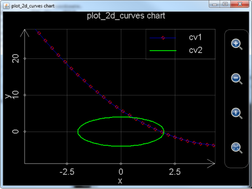
图7： 调用plot_2d_curves绘制指定范围的二维图像。
还要注意，这幅图像已经被可编程科学计算器自动保存以方便用户日后再次打开。如果这幅图像是在安卓系统上绘制的，那么用户点击主界面的“管理图形文件”图标，则可以进入图像文件夹。由于在调用plot_2d_curves时已经给图形文件命名为chart 1，所以生成的图形文件的文件名应该是chart 1.mfpc。用户找到它，长按该文件所对应的图标，则可以再次打开它。如果这幅图像是用基于JAVA的可编程科学计算器绘制的，在电脑上，我们可以找到JAVA的可编程科学计算器所在的AnMath目录的charts子目录，chart 1.mfpc保存在该目录中。用户如果想打开它，需要在基于JAVA的可编程科学计算器中，选择“工具”菜单-〉“观看图像”子菜单，或者按下Ctrl-O快捷键来打开此文件。
再举个例子。比如，用户想要绘制正三角形。正三角形的三条边的表达式分别为
以及
。那么可以调用plot_2d_curves绘制三条线作为三角形的三条边。第一条线的表达式为x=t和y=sqrt(3)*t+2，t从-sqrt(3)到0步长为0.02；第二条线的表达式为x=t和y=-sqrt(3)*t+2，t从0到sqrt(3)步长为0.02；第三条线的表达式为x=t和y=-1，t从sqrt(3)到sqrt(3)。整个调用语句如下：
plot_2d_curves("char 2", "plot_2d_curves chart", "x", "y", "black", "true", "cv1", "red", "point", 3, "red", "solid", 1, "t", -sqrt(3), 0, 0.02, "t", "sqrt(3)*t+2", "cv2", "green", "point", 3, "green", "solid", 1, "t", 0, sqrt(3), 0.02, "t", "-sqrt(3)*t+2", "cv3", "blue", "point", 3, "blue", "solid", 1, "t", -sqrt(3), sqrt(3), 0.02, "t", "-1")
。绘制出来的图形如下：
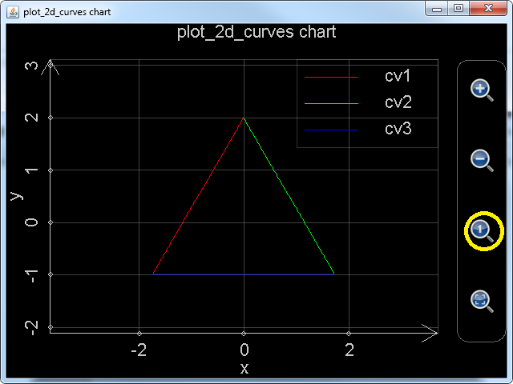
图8： 调用plot_2d_curves绘制三角形。
需要注意，图像刚刚生成时，由于x轴和y轴的坐标单位的长度不同，所以看起来并不像一个正三角形，这时，用户可以点击下图黄色圈圈中的放大镜里面有一个小1的按钮，自动调整x和y轴的坐标单位。这样得到的图形，就是标准的正三角形了。
Plot_2d_data函数则是用于绘制二维数据曲线图。它的每一个参数都必须是一个一维数组，数组的每一个元素都必须是实数。如果参数只有一个，那么该数组的第一个元素所对应的数据点在x轴的坐标为1，在y轴的坐标为第一个元素的值，第二个元素所对应的数据点在x轴的坐标为2，在y轴的坐标为第二个元素的值，…，以此类推，有多少个元素就有多少个数据点。比如，以下命令绘制出一条折线，折线的连接点为（1，1），（2，7），（3，8），（4，6）：
Plot_2d_data([1,7,8,6])
，绘制出的图形如下：
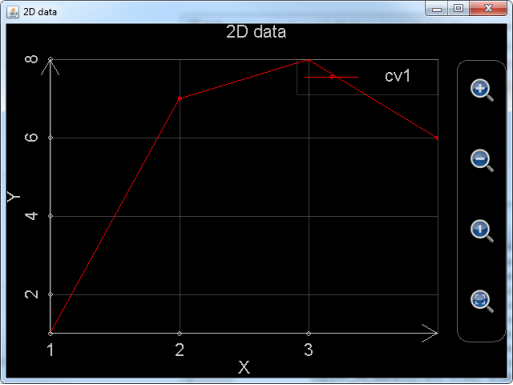
图9： 调用plot_2d_data，仅使用一个参数绘制数据图。
如果参数多于一个，那么参数个数必须为偶数个，并且是两个两个一组，每一组中的两个参数为元素个数相同的一维数组，分别对应该组参数所代表的数据点集合的x坐标和y坐标集，比如，想绘制数据点集（-1.71，6.24），（8.93，-7.08），（3.11，5.85），（4.28，-5.76）以及（5.99，-3.24），所需要的两个参数为[-1.71, 8.93, 3.11, 4.28, 5.99]和[6.24, -7.08, 5.85, -5.76, -3.24]。
以下语句绘制了两个数据集，这两个数据集中的点的个数并不相同，并且第二个数据集种，y的值有一个为Nan（无定义数），Nan的效果相当于数据集的点之间的连接线在这个点断开：
Plot_2d_data([-1.71, 8.93, 3.11, 4.28, 5.99], [6.24, -7.08, 5.85, -5.76, -3.24], [1.88, 2.41, 5.71, 7.66, 12.47, 15.19], [-3.69, 2.12, -1.74, Nan, 2.98,8.71])
绘制出的图形如下：
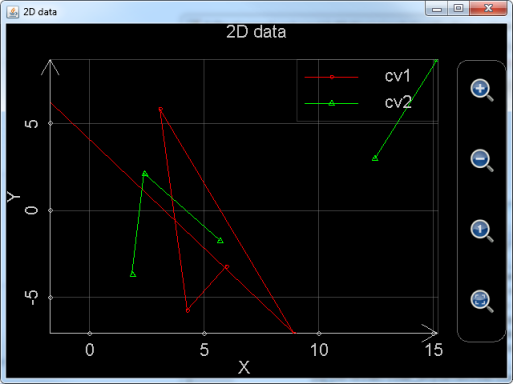
图10： 调用plot_2d_data，使用2组参数同时绘制2个数据集，注意其中的绿色数据集的点之间的连接线有间断。
需要注意的是，用户虽然可以缩放拖动plot_2d_data所绘制出来的图像，但是无法设置每个数据集所使用的颜色以及点和线的形态，也无法保存所生成的图形。
Plot_multi_xy则是非常底层的函数。这个函数和plot_2d_data一样是直接绘制数据，而不是根据表达式求得每个点的数据值然后加以绘制。Plot_2d_data直接调用这个函数。而plot2dEx则是先将表达式的每一个数据点的值都计算出来，然后再调用plot_multi_xy。
Plot_multi_xy的第一个参数为基于字符串的图像的名字，也就是去掉扩展名.mfpc的图像文件名。
Plot_multi_xy的第二个参数为图像的设置，这个参数是把所有的图像级别的设置放在一个字符串里面，每一个设置都基于
设置项目:设置项目的值;
的模式，然后将各个设置的首尾连接在一起。比如：
"chart_type:multiXY;chart_title:1 chart;x_title:x;x_min:-6.2796950076838645;x_max:6.918480857169536;x_labels:10;y_title:y;y_min:-4.487378580559947;y_max:4.1268715788884345;y_labels:10;background_color:black;show_grid:true"
，这里的chart_type是图形类型，必须为multiXY，chart_title为图像标题，x_title为图像x轴的名称，x_min为最开始显示x轴的范围的最小值，x_max为最开始显示x轴的范围的最大值，x_label表示x轴上有多少个刻度标记，y_title为图像y轴的名称，y_min为最开始显示y轴的范围的最小值，y_max为最开始显示y轴的范围的最大值，y_label表示y轴上有多少个刻度标记，background_color为背景色，show_grid为是否显示网格。
Plot_multi_xy的第3个参数为一条曲线的设置。这个参数是把所有的该曲线的设置放在一个字符串里面，每一个设置都基于
设置项目:设置项目的值;
的模式，然后将各个设置的首尾连接在一起。比如：
"curve_label:cv2;point_color:blue;point_style:circle;point_size:3;line_color:blue;line_style:solid;line_size:1"
，这里curve_label是曲线标题，point_color是曲线点的颜色，point_style是曲线上点的形状（圆形，方形等），point_size是点的大小（和plot_2d_curves一样，这一项还没有实现，用户随便设置一个正整数即可），line_color是曲线的点的连接线的颜色，line_style是连接线的类型（和plot_2d_curves一样，这一项还没有实现，用户设置为solid就好），line_size是线的宽度（必须为非负整数）。
Plot_multi_xy的第4个参数为该曲线上每一个点在x轴上的坐标，注意这个参数必须为一个一维数组，数组中的每一个元素必须是实数，和plot_2d_data一样，如果该元素是Nan，则曲线的连接线将在该点断开。
Plot_multi_xy的第5个参数为该曲线上每一个点在y轴上的坐标，注意这个参数必须为一个一维数组，数组的长度和第4个参数必须一致，数组中的每一个元素必须是实数，和plot_2d_data一样，如果该元素是Nan，则曲线的连接线将在该点断开。
如果用户想要绘制不止一条曲线，则需要输入另外一组参数3，4和5。用户最多可以绘制1024条曲线（对于1.6.6及以前版本，最多只能绘制8条曲线），所以plot_multi_xy最多支持2+1024*3等于3074个参数。
Plot_multi_xy的例子如下：
plot_multi_xy("chart2", "chart_type:multiXY;chart_title:1 chart;x_title:x;x_min:-6;x_max:6;x_labels:6;y_title:y;y_min:-4;y_max:4;y_labels:5;background_color:black;show_grid:true", "curve_label:cv2;point_color:blue;point_style:circle;point_size:3;line_color:blue;line_style:solid;line_size:1", [-5, -3, -1, 0, 1, 2, 3, 4, 5], [-3.778, -2.9793, -2.0323, -1.1132, 0.2323, 1.2348, 3.9865, 2.3450, 0.4356])
上述例子绘制的图像为
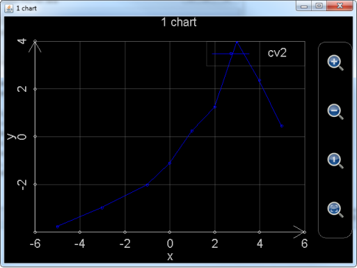
图11： 调用plot_multi_xy绘制图形。
注意，和plot_2d_curves一样，由于plot_multi_xy给出了图像文件的文件名，用户也可以在可编程科学计算器中再次打开它所生成的图像。
绘制极坐标系下的二维图形，MFP提供了和绘制普通坐标系下二维图形的类似的函数如下：
|
函数名 |
函数帮助信息 |
|
plot_polar |
plot_polar(6...) : 函数plot_polar调用plot_multi_xy以绘制由最多8条极坐标曲线所构成的图像。其包括以下参数：1.图像名字（图像文件名）；2.图像标题；3.R轴标题；4.幅角标题；5.图像背景色；6.是否显示网格；7.曲线标题；8.曲线数据点颜色；9.曲线数据点形状；10.曲线数据点大小；11.曲线连接线颜色；12.曲线连接线类型；13.曲线连接线粗细；14.t起始位置；15.t终止位置；16.t的间隔；17.以t为变量的R的表达式；18.以t为变量的幅角的表达式...。其中，每增加一条新的曲线，需要添加12个参数（也就是参数7到18），最多定义8条曲线。另外要注意图像背景色，曲线数据点的大小，曲线连接线颜色以及曲线连接线类型还没有被实现，曲线连接线粗细仅支持0（意味着没有连接线连接数据点）和非0（意味着有连接线连接数据点）。本函数的一个例子为：plot_polar("chart 3", "3rd chart", "R", "Angle", "black", true, "cv1", "blue", "point", 0, "yellow", "solid", 1, -5, 5, 0.1, "cos(t)", "t", "cv2", "red", "square", 4, "green", "solid", 1, 0, PI*2.23, PI/10, "5*sqrt(t)", "t + PI") 。 |
|
plot_polar_curves |
plot_polar_curves(6...) : 函数plot_polar_curves绘制由最多1024条极坐标曲线所构成的图像。其包括以下参数：1.图像名字（图像文件名）；2.图像标题；3.幅度轴标题；4.幅角标题（需要注意幅角标题在图中实际上不会被显示）；5.图像背景色；6.是否显示网格（注意这个参数是一个字符串，其值为"true"或者"false"）；7.曲线标题；8.曲线数据点颜色；9.曲线数据点形状；10.曲线数据点大小；11.曲线连接线颜色；12.曲线连接线类型；13.曲线连接线粗细；14.内部变量的名字（通常为"t"）；15.内部变量的起始位置；16.内部变量的终止位置；17.内部变量的每一步变化间隔；18.基于内部变量的幅度的表达式；19.基于内部变量的幅角的表达式...。其中，每增加一条新的曲线，需要添加13个参数（也就是参数7到19），最多定义1024条曲线。另外要注意图像背景色，曲线数据点的大小，曲线连接线颜色以及曲线连接线类型还没有被实现，曲线连接线粗细仅支持0（意味着没有连接线连接数据点）和非0（意味着有连接线连接数据点）。本函数的一个例子为：plot_polar_curves("chart 3", "3rd chart", "R", "angle", "black", "false", "cv1", "blue", "x", 2, "blue", "solid", 1, "t", -5, 5, 0.1, "t", "t**2/2.5 - 4*t + 6", "cv2", "red", "square", 4, "square", "solid", 1, "t", -10, 10, 0.1, "5*sin(t)", "10*cos(t)") 。 |
|
plot_polar_data |
plot_polar_data(16) : 函数plot_polar_data分析最少1组，最多8组数值向量，每组数值向量将会被绘制为一条极坐标曲线。输入的参数个数可以为2个（绘制一条曲线），4个（绘制2条曲线），6个（绘制3条曲线），8个（绘制4条曲线），10个（绘制5条曲线），12个（绘制6条曲线），14个（绘制7条曲线），16个（绘制8条曲线）。每一个参数都是一个数值向量（也就是一维矩阵）。奇数号参数决定曲线中的每一个点的R值，偶数号参数决定每一个点的幅角值。注意决定R值的参数中包含的元素个数应该和决定幅角值的参数中包含的元素相同。函数一个例子为plot_polar_data([2.47, 3.53, 4.88, 9.42], [8.49, 6.76, 5.31, 0.88], [-9, -7, -5, -3, -1], [28, 42, 33, 16, 7])。 |
不难发现，plot_polar，plot_polar_curves和plot_polar_data函数与前一节中详细介绍的plot2dEx，plot_2d_curves和plot_2d_data函数是一一对应的，它们甚至参数的输入都是几乎一模一样。并且，和前面用户2D绘图的版本一样，plot_polar_curves由JAVA实现，最多能绘制1024条曲线，无论绘图速度还是曲线数量都远远强于plot_polar函数，所以将在未来的版本中逐步取代plot_polar函数。
Plot_polar_curves和上一节中的plot_2d_curves的区别在于，第三个参数对于plot_polar_curves来讲是R轴（也就是极坐标中的幅角轴）的名称，而对于plot_2d_curves来讲是x轴的名称，第四个参数对于plot_polar_curves来讲是幅角的名称，对于plot_2d_curves来讲是y轴的名称。Plot_polar_curves和plot_2d_curves一样，定义一条曲线也需要13个参数，不同的是，定义每条曲线的13个参数的倒数第二个参数对于plot_polar_curves函数来讲是幅值对内部变量（通常变量名称是t）的函数，倒数第一个参数是幅角对内部变量的函数，而定义每条曲线的13个参数的倒数第二个参数对于plot_2d_curves函数来讲是x轴的坐标对内部变量的函数，倒数第一个参数是y轴坐标对内部变量的函数。
以下是使用plot_polar_curves函数绘制莲花和蝴蝶形状的例子。莲花形状的方程式为
r = sin θ + sin3(2.5θ)........0 ≤ θ ≤ 4π
，那么，如果将θ（也就是幅角）对t的表达式设置为t，r（也就是幅值）对t的表达式则是r(t)==sin(t)+sin(2.5*t)**3，t的变化范围是0到4*pi，我们可以设定步长为0.05。
蝴蝶形状的极坐标方程式为
，那么，如果将θ（也就是幅角）对t的表达式设置为t，r（也就是幅值）对t的表达式则是r(t)==0.6*exp(sin(t))-2*cos(4*t)+sin((2*t-pi)/24)**5，t的变化范围是-pi到pi，我们可以设定步长为0.02。
整个绘图函数的调用语句为：
plot_polar_curves("LotusAndButterfly", "Lotus & Butterfly", "R", "Angle", "black", "true", "Lotus", "yellow", "point", 0, "red", "solid", 3, "t", 0, 4*pi, 0.05, "sin(t)+sin(2.5*t)**3", "t", "Butterfly", "green", "circle", 4, "blue", "solid",1,"t",-pi, pi,0.02,"0.6*exp(sin(t))-2*cos(4*t)+sin((2*t-pi)/24)**5","t")
绘制出来的图像如下：
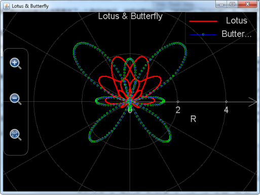
图12： 调用plot_polar_curves绘制莲花和蝴蝶。
和plot_2d_curves函数一样，上述绘制出来的图案被保存为文件（文件名为plot_polar_curves的第一个参数加上.mfpc扩展名，也就是LotusAndButterfly.mfpc）存放AnMath目录下的charts子目录中。用户可以在可编程科学计算器中打开。
Plot_polar_data和上一节中的plot_2d_data的参数输入的区别在于，plot_polar_data不能够仅仅只输入一个一维数组作为参数。Plot_polar_data输入的参数必须是成对的，每对参数对定义一组数据点，每对参数包括两个一维数组，，数组中的元素必须为实数或者Nan，每对参数中两个数组的长度必须相符。其中，奇数号数组定义了该组数据点的幅值，偶数号数组定义了数据点的幅角。
下述例子用于在极坐标系中绘制两组数据，第一组数据中含有4个点，第二组中有6个点。但要注意第二组数据中有一个点的幅值为Nan，所以，第二组数据各点之间的连线在这一点断开。
plot_polar_data([2.47, 3.53, 4.88, 9.42], [8.49, 6.76, 5.31, 0.88], [-9, -7, Nan, -3, -1, 1], [28, 42, 33, 16, 7, 0])
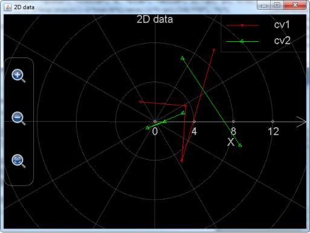
图13： 调用plot_polar_data在极坐标系中绘制数据图。
Plot_polar和plot_polar_data实际上都是使用MFP语言本身编写的绘图函数，它们进行绘图时，都调用了上一节中介绍的plot_multi_xy函数。在上一节的函数表中，对plot_multi_xy的介绍已经很清楚了：plot_multi_xy(包含至少2个参数)用于绘制2维或极坐标图像，每个图像最多包括1024条曲线。参数1为图像名字，参数2为图像设置，该参数是一个字符串，比如"chart_type: multiRangle;chart_title:1 chart;x_title:x;x_min:-6.2796950076838645;x_max:6.918480857169536;x_labels:10;y_title:y;y_min:-4.487378580559947;y_max:4.1268715788884345;y_labels:10;background_color:black;show_grid:true"。注意这里chart_type的值不再是multiXY（用于绘制二维图像）而是multiRangle（用于绘制极坐标图像）了。x_labels对于极坐标图像来讲是R轴有多少刻度标记，y_labels对于极坐标幅值的设定毫无影响，因为幅角的刻度标记的个数永远是8个，不可以更改。所以用户只用给y_labels随便填入一个正整数即可。
那么，如果把上一节中在常规坐标系下调用plot_multi_xy绘制的图形搬到极坐标系下会是怎样的呢，运行下述语句：
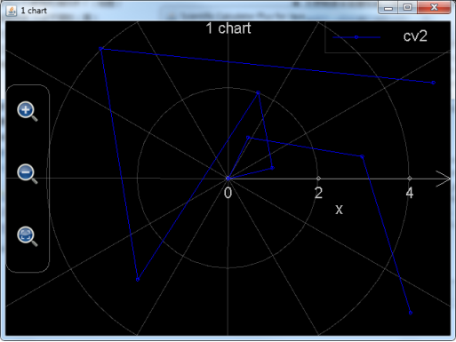
图14： 调用plot_multi_xy在极坐标系中绘制数据图形。
plot_multi_xy("chart2", "chart_type:multiRangle;chart_title:1 chart;x_title:x;x_min:-6;x_max:6;x_labels:6;y_title:y;y_min:-4;y_max:4;y_labels:5;background_color:black;show_grid:true", "curve_label:cv2;point_color:blue;point_style:circle;point_size:3;line_color:blue;line_style:solid;line_size:1", [-5, -3, -1, 0, 1, 2, 3, 4, 5], [-3.778, -2.9793, -2.0323, -1.1132, 0.2323, 1.2348, 3.9865, 2.3450, 0.4356])
，可以看到绘制出的图形为参见上图。
上述例子在极坐标系上的图案似乎杂乱无章，对比图8.11：，不难得出结论，极坐标系和常规坐标系是展现数据的两种不同方式，有时候在一个坐标系下找不到规律的数据，放到另外一个坐标系下，就能得到很好的分析效果。
MFP提供了以下函数用于绘制三维图形：
|
函数名 |
函数帮助信息 |
|
plot3d |
plot3d(5...) : 函数plot3D调用plot_multi_xyz以绘制由最多8条3-D曲面所构成的图像。其包括以下参数：1.图像名字（图像文件名）；2.图像标 题；3.X轴标题；4.Y轴标题；5.Z轴标题；6.曲线标题；7.是网格还是填充表面（true是网格，false是填充表面）；8.z值最小的时候的 颜色；9.最小的z值（注意如果是null，意味着让软件自己找到最小的z值）；10.z值最大的时候的颜色；11.最大的z值（注意如果是null，意 味着让软件自己找到最大的z值）；12.变量u的起始值；13.变量u的终止值；14.变量u的间隔（0意味着间隔由软件决定）；15.变量v的起始 值；16.变量v的终止值；17.变量v的间隔（0意味着间隔由软件决定）；18.以u，v为变量的X的表达式；19.以u，v为变量的Y的表达 式；20.以u，v为变量的Z的表达式；...。其中，每增加一条新的曲线，需要添加15个参数（也就是参数6到20），最多定义8条曲线。该函数的一个 例子为：plot3D("chartI", "first chart", "x", "y", "z", "Curve1", true, "red", -0.5, "green", null, 0, pi, pi/8, -pi/2, pi/2, 0, "sin(u)*cos(v)", "sin(u)*sin(v)", "cos(u)") 。 |
|
plot_3d_surfaces |
plot_3d_surfaces(5...) : 函数plot_3d_surfaces绘制由最多1024条3-D曲面所构成的图像。其包括以下参数：1.图像名字（图像文件名）；2.图像标题；3.X轴标题；4.Y轴标题；5.Z轴标题；6.曲线标题；7.是网格还是填充表面（这是一个布尔值，true是网格，false是填充表面）；8.z值最小的时候的正面的颜色；9.z值最小的时候的反面的颜色；10.最小的z值（注意如果是null，意味着让软件自己找到最小的z值）；11.z值最大的时候的正面的颜色；12.z值最大的时候的反面的颜色；13.最大的z值（注意如果是null，意味着让软件自己找到最大的z值）；14.第一个内部变量的名字（通常为"u"）；15.第一个内部变量的起始值；16.第一个内部变量的终止值；17.第一个内部变量的每一步变化的间隔（0意味着间隔由软件决定）；18.第二个内部变量的名字（通常为"v"）；19.第二个内部变量的起始值；20.第二个内部变量的终止值；21.第二个内部变量的每一步变化的间隔（0意味着间隔由软件决定）；22.基于前述两个内部变量的X的表达式；23.基于前述两个内部变量的Y的表达式；24.基于前述两个内部变量的Z的表达式；...。其中，每增加一条新的曲面，需要添加19个参数（也就是参数6到24），最多定义1024条曲面。该函数的一个例子为：plot_3D_surfaces("chartI", "first chart", "x", "y", "z", "Curve1", false, "red", "cyan", -0.5, "green", "yellow", null, "u", 0, pi, pi/8, "v", -pi/2, pi/2, 0, "sin(u)*cos(v)", "sin(u)*sin(v)", "cos(u)") 。 |
|
plot_3d_data |
plot_3d_data(24) : 函数plot_3d_data分析最少1组，最多8组数值矩阵，每组数值矩阵将会被绘制为一条曲面。输入的参数个数可以为1个（绘制一条曲面），3个（绘 制一条曲面），6个（绘制2条曲面），9个（绘制3条曲面），12个（绘制4条曲面），15个（绘制5条曲面），18个（绘制6条曲面），21个（绘制7 条曲面），24个（绘制8条曲面）。如果只有一个参数，该参数必须是一个2维矩阵，矩阵中的每一个元素将会是绘制出的曲线中的一个点的z值，否则，每3个 参数组成一个参数组，在每个参数组中，第一个参数必须是一个一维矩阵，参数中的元素值决定的决定曲面中各点的x值，第二个参数也必须是一个一维矩阵，参数 中的元素值决定的决定曲面中各点的y值，第三个参数必须是一个二维矩阵，矩阵中的元素值决定每一个点的z值。注意决定x值的参数中包含的元素个数以及决定 y值的参数中包含的元素应该和决定z值的参数中包含的元素个数相符。函数例子包括plot_3d_data([[2.47, 3.53, 4.88, 9.42], [8.49, 6.76, 5.31, 0.88], [-9, -7, -5, -3, -1]])以及plot_3d_data([1,2,3],[4,5,6,8],[[3,7,2],[5,8,9],[2,6,3],[7,4,4]], [8,7,4,8],[2,1],[[9,3,2,6],[4,5,3,7]])。 |
|
plot_multi_xyz |
plot_multi_xyz(2…) : plot_multi_xyz(包含至少2个参数)用于绘制3维图像，每个图像最多包括1024条曲面。参数1为图像名字，参数2为图像设置，图像设置参数是 一个字符串，比如"chart_type:multiXYZ;chart_title:This is a graph;x_title:x axis;x_min:-24.43739154366772;x_max:24.712391543667717;x_labels:10;y_title:Y axis;y_min:-251.3514430737091;y_max:268.95144307370913;y_labels:10;z_title:Z axis;z_min:-1.6873277335234405;z_max:1.7896774628184482;z_labels:10"。需要注 意的是chart_type的值必须是multiXYZ，x_labels，y_labels和z_lables分别代表x，y和z轴上有多少刻度标记。 从参数3到参数34，每4个参数定义一条曲线，在这4个参数中，第一个参数为曲线设置，第二个参数是包含所有x数值的矩阵，第三个参数是包括所有y值的矩 阵，第四个参数是包括所有z值的矩阵。曲线设置参数为一个字符串，比 如"curve_label:cv2;is_grid:true;min_color:blue;min_color_1:cyan;min_color_value:- 2.0;max_color:white;max_color_1:yellow;max_color_value:2.0"。另外注意x，y和z的每一 个数值都必须为实数，x，y和z的矩阵的尺寸必须一致。本函数不返回数值。本函数的一个例子为：plot_multi_xyz("chartII", "chart_type:multiXYZ;chart_title:This is a graph;x_title:x;x_min:-5;x_max:5;x_labels:6;y_title:Y;y_min:-6;y_max:6;y_labels:3;z_title:Z;z_min:-3;z_max:1;z_labels:4", "curve_label:cv1;min_color:blue;min_color_1:green;max_color:yellow;max_color_1:red", [[-4, -2, 0, 2, 4],[-4, -2, 0, 2, 4],[-4, -2, 0, 2, 4]], [[-5, -5, -5, -5, -5], [0, 0, 0, 0, 0], [-5, -5, -5, -5, -5]], [[-2.71, -2.65, -2.08, -1.82, -1.77], [-2.29, -2.36, -1.88, -1.45, -1.01], [-1.74, -1.49, -0.83, -0.17, 0.44]]) 。 |
其中，plot3d和plot_3d_surfaces是用来在指定范围内会制3维表达式曲面或者曲线，plot_3d_data用于绘制三维数据图像。Plot_multi_xyz为更底层的函数，它被plot3d和plot_3d_data函数所调用。和plot2dEx以及plot_polar函数一样，plot3d函数由MFP语言写成，最多只能在一张图上绘制8条曲面，它的JAVA实现的对应版本plot_3d_surfaces可以最多绘制1024条曲面（在1.6.6及其以前的版本中plot_3d_surfaces函数接口不对用户开放，并且最多也只能绘制8条曲面），计算速度也快很多，强烈建议用户逐步放弃使用plot3d函数而转移到plot_3d_surfaces函数上。
Plot_3d_surfaces函数事实上就是安卓上的可编程科学计算器的独立的“绘制图形”-〉“绘制三维图像”工具的函数版。它所需要的参数中，前5个参数用于设置图像本身，分别为图像的文件名（文件扩展名.mfpc会被自动加上，不用用户输入），图像的标题，x轴的名字，y轴名字和z轴名字。这些参数都是字符串。图像的背景色永远是黑色，不能够由用户设定。从第6个参数开始，每19个参数用于设置一条曲线（或者曲面）。它们分别是：
1． 曲线（面）的名字（基于字符串）；
2． 曲面是网格还是填充表面（注意该参数不是字符串，而是布尔值。true是网格，false是填充表面。如果绘制的曲面，这两种都可以。如果绘制的是曲线，强烈建议设置为true，也就是网格，否则，曲线和坐标轴的颜色一样，都是灰色的，看都看不清）；
3． Z坐标方向上最小值对应的曲面的正面颜色（基于字符串，包括"white "（白色），"black"（黑色），"red"（红色），"green"（绿色），"blue"（蓝色），"yellow"（黄色），"cyan"（青色），"magenta"（紫红色），"dkgray"（深灰色）以及"ltgray"（浅灰色），如果字符串不是上述任何一种，将使用白色）；
4． Z坐标方向上最小值对应的曲面的反面颜色（基于字符串，包括"white "（白色），"black"（黑色），"red"（红色），"green"（绿色），"blue"（蓝色），"yellow"（黄色），"cyan"（青色），"magenta"（紫红色），"dkgray"（深灰色）以及"ltgray"（浅灰色），如果字符串不是上述任何一种，将使用白色）；
5． 最小的z值（注意，这个最小的z值不见得是曲面在Z坐标方向上的最小值，它只是定义了颜色的变化，也就是，图案中任何小于最小z值的部分都被涂以最小z值对应的颜色，图案中大于最小z值的部分的颜色从最小z值对应的颜色向最大z值所对应的颜色渐变。如果该值设置为null，则让软件自己寻找曲面或曲线的最小z值）；
6． Z坐标方向上最大值对应的曲面正面的颜色（基于字符串，包括"white "（白色），"black"（黑色），"red"（红色），"green"（绿色），"blue"（蓝色），"yellow"（黄色），"cyan"（青色），"magenta"（紫红色），"dkgray"（深灰色）以及"ltgray"（浅灰色），如果字符串不是上述任何一种，将使用白色）；
7． Z坐标方向上最大值对应的曲面反面的颜色（基于字符串，包括"white "（白色），"black"（黑色），"red"（红色），"green"（绿色），"blue"（蓝色），"yellow"（黄色），"cyan"（青色），"magenta"（紫红色），"dkgray"（深灰色）以及"ltgray"（浅灰色），如果字符串不是上述任何一种，将使用白色）；
8． 最大的z值（注意，这个最大的z值不见得是曲面在Z坐标方向上的最大值，它只是定义了颜色的变化，也就是，图案中任何大于最大z值的部分都被涂以最大z值对应的颜色，图案中小于最大z值的部分的颜色从最大z值对应的颜色向最小z值所对应的颜色渐变。如果该值设置为null，则让软件自己寻找曲面或曲线的最大z值）；
9． 第一个内部变量的名字，通常是u；
10． 第一个内部变量，也就是变量u（如果被命名为u的话）的变化范围的起始值（必须是一个实数。这里的u和用基于安卓的可编程科学计算器上独立的“绘制图形”工具绘制三维图像时所使用的u是一样的）；
11． 变量u的变化范围的终止值（必须是一个实数）；
12． 变量u的变化的步长（必须是一个实数，u的变化范围除以变化步长加1就是在u方向上要绘制的点的个数。注意用户可以将其设置为0，设置为0意味着变化的步长由软件决定）；
13． 第二个内部变量的名字，通常为v；
14． 第二个内部变量，也就是变量v（如果被命名为v的话）的变化范围的起始值（必须是一个实数。这里的v和用基于安卓的可编程科学计算器上独立的“绘制图形”工具绘制三维图像时所使用的v是一样的）；
15． 变量v的变化范围的终止值（必须是一个实数）；
16． 变量v的变化的步长（必须是一个实数，v的变化范围除以变化步长加1就是在v方向上要绘制的点的个数。注意用户可以将其设置为0，设置为0意味着变化的步长由软件决定）；
17． X坐标变化对于u和v的函数（基于字符串）；
18． Y坐标变化对于u和v的函数（基于字符串）；
19． Z坐标变化对于u和v的函数（基于字符串）；
由于plot_3d_surfaces函数最多可以绘制1024条曲线，它的参数个数最多可以达到5+19*1024等于19461个。
下面给出一个例子用于绘制彩色6面立方体。绘制立方体是所有三维绘图软件必包含的例子。MFP一样也可以做到。绘制立方体的思路是，立方体的六个面每个面是plot_3d_surfaces函数的一个待绘制曲面，假设立方体的边长为2，那么可以定义u从-1到1步长为2（步长为2意味着曲面上不会有网格线出现，因为曲面本身就是网格中的一个格），v从-1到1步长也为2，由于立方体的任意一个面必然与某一个坐标轴在-1或者1垂直相交而平行于另外两个坐标轴，所以x，y和z中，必然有一个等于-1或者1，另外两个一个等于u，另一个等于v。整个调用语句如下：
Plot_3d_surfaces("3dBox", "3D Box", "x", "y", "z", _
"",false,"red","red",null,"red","red",null,"u",-1,1,2,"v",-1,1,2,"u","v","1", _
"",false,"green","green",null,"green","green",null,"u",-1,1,2,"v",-1,1,2,"u","1","v", _
"",false,"blue","blue",null,"blue","blue",null,"u",-1,1,2,"v",-1,1,2,"1","u","v", _
"",false,"yellow","yellow",null,"yellow","yellow",null,"u",-1,1,2,"v",-1,1,2,"u","v","-1", _
"",false,"cyan","cyan",null,"cyan","cyan",null,"u",-1,1,2,"v",-1,1,2,"u","-1","v", _
"",false,"magenta","magenta",null,"magenta","magenta",null,"u",-1,1,2,"v",-1,1,2,"-1","u","v")
绘制出的图形效果如下：
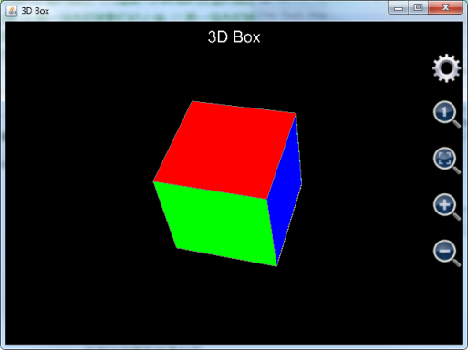
图15： 调用plot_3d_surfaces函数绘制立方体。
注意到在上述例子中由于我们设置曲面的标题为空字符串，各个曲面的图例说明不会在图中显示。

图16： 设置三维图形，隐藏坐标轴和标题。
用户可以用手指或者鼠标拖动图形进行旋转，还可以点击放大缩小图标调整图形大小（在安桌上，用户还可以用捏合扩张的手势进行同样的操作），如果我们想要显示坐标轴或者觉得标题太碍眼想隐藏标题，则可以点击齿轮按钮，不选中隐藏坐标轴（红色的方框），但选择隐藏标题（绿色方框），参见上图。
需要注意的是，在可编程科学计算器1.6.6版中，用户只能选择同时隐藏坐标轴和标题或者同时显示坐标轴和标题。在更老的版本中，用户是无法隐藏坐标轴和标题的。
用户不选中红色长方形中的选择框，但是选中绿色长方形中的选择框，则坐标轴显示但标题被隐藏。图像效果参见下图：
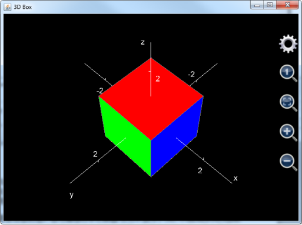
图17： 隐藏坐标轴和标题后的三维立方体。
和plot_2d_curves函数一样，由于用户在调用函数时指定了文件名，生成的图像会被自动保存在AnMath/charts目录中方便日后用户在可编程科学计算器中打开查看。
绘制立方体，只能算是MFP强大的三维绘图功能的开胃甜点，以下例子向用户展示如何用plot_3d_surfaces函数绘制北京的地标建筑鸟巢。鸟巢的照片如下：
图18： 北京的地标建筑鸟巢的实物照片。
绘制鸟巢，并非是把鸟巢上的每一根钢筋支架都画出来。一些细节的东西在图中将会被省略，绘制的关键在于鸟巢顶部圆环波浪形半开状态的屋顶，和鸟巢四周圆环形，但又是倾斜的围墙。
我们知道，如果用u和v作变量，u看作是幅角，v看作是半径，圆形的表达式为
x = v cos u
y = v sin u
这里，u的变化范围是从-pi到pi，v是一个常数。
如果绘制的是圆环，相当于由很多同心圆层层叠加，这时，v就不再是一个常数，而是一个范围，我们假设鸟巢屋顶的外径为15，内径为7.5，为了绘制鸟巢屋顶，v的范围就是从7.5到15。
再假设鸟巢的平均高度是5，所以，鸟巢屋顶所在的曲面的z坐标平均值为5。
问题在于，鸟巢的屋顶并不是平的，它是一个波浪形，也就是一个余弦曲线，从鸟巢的实物照片中可以看到，鸟巢屋顶的变化是从高到低再到高再到低，就相当于从-pi到pi的范围内，该余弦曲线震荡了两次，所以，该余弦曲线应该用cos(2*u)来表示，所以鸟巢屋顶的实际大致（注意是大致）高度应该是5*(1 + 0.3 * cos(2*u))，这里的0.3表示余弦曲线的震荡幅度，这个值是通过看图估计出来的。
还注意到，鸟巢屋顶高度波浪形的变化并非是从里到外均匀一致的，越靠近边缘，屋顶高度的波浪形变化越明显，所以，鸟巢屋顶高度的震荡部分还要乘以一个和半径相关的系数，所以，鸟巢屋顶高度，也就是鸟巢屋顶的z坐标的最终表达式为5*(1 + 0.3 * cos(2*u)*v/15)，这里5为鸟巢屋顶的平均高度，0.3为屋顶高度的震荡幅度，15为鸟巢的最大半径。
本来，如果鸟巢是一个标准的圆柱体，鸟巢屋顶的高度变化对屋顶上每个点的x坐标和y坐标并不会有影响。但是问题在于，鸟巢并不是标准的圆柱体。由于鸟巢的外墙是从上往下向内倾斜，所以，鸟巢实际上是一个倒置的圆椎体的一部分。这样一来，屋顶的高度发生变化，会引起屋顶边缘所在点的半径发生畸变，屋顶的高度变高，屋顶边缘的半径就会变长，屋顶的高度变低，边沿的半径就会变短。我们假设鸟巢外墙的倾斜度（斜率）为5，由于已经假定鸟巢顶部的直径为15，高度为5，所以鸟巢底部的直径应该是15-5/5=14。换句话说，鸟巢所在椎体的上下半径的差距为1，是最大半径的1/15。这就意味着，鸟巢边缘半径随高度的变化而变化，变化幅度为高度变化幅度的1/15。由于鸟巢屋顶的z坐标的最终表达式为5*(1 + 0.3 * cos(2*u)*v/15)，所以鸟巢屋顶的x坐标的最终表达式为v*(1 + 0.02 * cos(2*u)*v/15)*cos(u)，而y坐标的最终表达式为v*(1 + 0.02 * cos(2*u)*v/15)*sin(u)。这里，0.02就是半径变化的幅度，它是0.3的1/15。
下一步就是绘制鸟巢四周的围墙，上面已经假设鸟巢的顶部最大半径为15，底部最大半径为14，高度为5。所，可以逆推得到，鸟巢所在的圆椎体的顶点所在位置为z==-14/(15-14)*5==-70，圆锥体表面的斜率为5。如果只是想绘制绘制这个圆锥体从半径等于14到半径等于15的带状部分，可以将变量v看作高度，变化范围从0到5，u看作幅角，变化范围从-pi到pi，则x、 y和z的表达式为
z = v
但是，由于屋顶的波浪形变化，造成了鸟巢外墙的顶部高度发生畸变，这种畸变从顶部向底部传递的过程中逐渐减弱，外墙底部是完全平坦的。由于v的顶部是5，底部是0，我们可以简单地给z乘以屋顶边缘高度的震荡系数，也就是z==v*(1+0.3*cos(2*u))，这里的0.3就是上面提到的屋顶高度的震荡幅度。
由于屋顶高度发生变化，外墙上每个点的x和y的坐标也会有相应的畸变，由于鸟巢所在圆锥体的表面斜率为5，所以x和y坐标的畸变幅度应该是z方向畸变幅度的1/5。这样一来，鸟巢外墙的x坐标的表达式为
X==(14 + v * (1 + 0.3 * cos(2*u))/5) * cos(u)
Y==(14 + v * (1 + 0.3 * cos(2*u))/5) * sin(u)
鸟巢的底部就是一个简单的圆形，半径为14，高度为0，u看作是幅角，变化范围是从-pi到pi，v看作是半径，变化范围从0到14，那么鸟巢底部x，y和z的表达式为
x = (14 cos u)
y = (14 sin u)
z = 0
所以，最终汇制鸟巢图案的语句为：
Plot_3d_surfaces("birdnest", "Bird 's Nest", "x", "y", "z", _ //设定图像的名字
"", false, "red", "blue", null, "cyan", "ltgray", null, "u", -pi, pi, 0, "v", 0, 5, 0, "(14 + v * (1 + 0.3 * cos(2*u))/5) * cos(u)", "(14 + v * (1 + 0.3 * cos(2*u))/5) * sin(u)", "v * (1 + 0.3 * cos(2*u))", _ // 绘制鸟巢的四周围墙
"", false, "magenta", "red", null, "yellow", "green", null, "u", -pi, pi, 0, "v", 7.5, 15, 0, "v*(1 + 0.02 * cos(2*u)*v/15)*cos(u)", "v*(1 + 0.02 * cos(2*u)*v/15)*sin(u)", "5*(1 + 0.3 * cos(2*u)*v/15)", _ // 绘制鸟巢的顶部
"", false, "green", "cyan", null, "green", "cyan", null, "u", -pi, pi, 0, "v", 0, 14, 0, "v*cos(u)", "v*sin(u)", "0") // 绘制鸟巢的底部
图像绘制结果参见下图。注意图像刚开始显现的时候，图形的尺寸比较小，用户可以点击绿色方框中的放大按钮，将图形放大，并用鼠标拖动图形进行旋转，调整观察角度，以获取最好的视觉效果。
还要注意，如果用户使用的是1.6.6版本的可编程科学计算器，图像刚开始显现的时候，看起来并不像鸟巢，原因在于图形太大，并且x、y和z轴的单位长度不成比例，用户可以点击红色方框中的放大镜中有一个小1的按钮，将x、y和z轴比例调整为1：1：1，然后再点击黄色方框中的缩小按钮，便可以看到逼真的鸟巢图形。
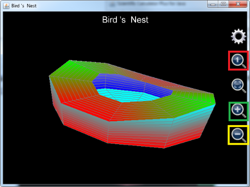
图19： 鸟巢三维图像。
如果用户使用的是1.6.6及其以前版本的可编程科学计算器，在调用plot3d函数绘制包含多个曲目的3维图形时，往往会被plot3d函数最多支持8组x，y和z的表达式的限制所困扰，但是，完全可以用plot3d函数绘制出复杂的，包括多于8个曲面的立体图像。其办法是，调用iff函数，在u（或者v）处于某一个范围时绘制出一个曲面，在u（或者v）处于另外一个范围时绘制出另一个曲面。为了避免两个曲面相连，u（或者v）处于这两个范围之间时，x或者y或者z设置为Nan。这种办法也可以用于plot_3d_surfaces、plot2dEx、plot_2d_curves、plot_polar和plot_polar_curves函数，当然由于从1.6.7版开始，plot_3d_surfaces、plot_2d_curves和plot_polar_curves函数一次均可绘制出1024条曲线，使用这个办法对它们来说没有意义。
为了方便1.6.6及其以前版本的可编程科学计算器用户，在这里给出直接使用plot3d函数绘制工具绘制上海东方明珠电视塔的代码和在个人电脑上的绘图效果（在安卓平台上也可以同样的函数绘制出同样的效果图），可以看到，使用MFP编程绘制复杂图形，比在手机上输入方便得多。另外需要注意的是plot3d函数是如何使用一组表达式绘制多个曲面的，比如，在绘制3根大小球之间的连接柱体时，plot3d函数设置u的变化范围从0到8（也就是幅角从0到8*pi变化）；v的变化范围从20到70（也就是立柱的高度为20到70）；x的表达式为iff(u<=2,1.5*cos(u*pi)-2,and(u>=3,u<=5), 1.5*cos(u*pi), u>=6, 1.5*cos(u*pi)+2, Nan)，这里，u从0到2（也就是幅角从0到2*pi）用于绘制第一个柱体，u从3到5（也就是幅角从3*pi到5*pi）用于绘制第二个柱体），u从6到8（也就是幅角从6*pi到8*pi）用于绘制第三个柱体，iff函数给出了在这三个范围内x的不同的表达式。
需要注意，在这三个范围之间，也就是u从2到3和从5到6，x的表达式值为Nan，其原因，如上所述，是为了保证这三根柱体的表面不是相互连接的。
同理，y的表达式为iff(u<=2,1.5*sin(u*pi)+2/sqrt(3),and(u>=3,u<=5), 1.5*sin(u*pi)- 4/sqrt(3), u>=6, 1.5*sin(u*pi)+2/sqrt(3), Nan)，而z由于仅仅表示高度，表达式相对简单，就是v。
绘制上海东方明珠电视塔的代码如下：
plot3d("Oriental_Pearl_Tower","Oriental Pearl Tower","x","y","z", _
"",false,"red",null,"yellow",null,0,8,0.25,0,20,20,"iff(u<=2,3*cos(u*pi)-(20-v)*sqrt(3)/2,and(u>=3,u<=5), 3*cos(u*pi), u>=6, 3*cos(u*pi)+(20-v)*sqrt(3)/2, Nan)","iff(u<=2,3*sin(u*pi)+(20-v)/2,and(u>=3,u<=5), 3*sin(u*pi)-(20-v)*sqrt(3)/2, u>=6, 3*sin(u*pi)+(20-v)/2, Nan)","v", _ //Plot supporting leaning columns（绘制底部三根支撑斜柱体）
"",false,"green",null,"yellow",null,-1,1,0.25,0,20,20,"cos(u*pi)*2","sin(u*pi)*2","v", _ //plot connection column（绘制连接柱）
"",false,"red",null,"cyan",null,-pi,pi,pi/10,-pi/2,pi/2,pi/10,"10*cos(u)*cos(v)","10*sin(u)*cos(v)","10*sin(v)+20", _ //plot the big ball（绘制大球）
"",false,"green",null,"blue",null,0,8,0.25,20,70,50,"iff(u<=2,1.5*cos(u*pi)-2,and(u>=3,u<=5), 1.5*cos(u*pi), u>=6, 1.5*cos(u*pi)+2, Nan)","iff(u<=2,1.5*sin(u*pi)+2/sqrt(3),and(u>=3,u<=5), 1.5*sin(u*pi)- 4/sqrt(3), u>=6, 1.5*sin(u*pi)+2/sqrt(3), Nan)","v", _ //plot the connection columns between the big ball and the small ball（绘制大球和小球之间的三根连接柱）
"",false,"magenta",null,"white",null,-pi,pi,pi/10,-pi/2,pi/2,pi/10,"6*cos(u)*cos(v)","6*sin(u)*cos(v)","6*sin(v)+70", _ //plot the small（绘制小球）
"",false,"yellow",null,"green",null,0,2,0.25,70,85,15,"cos(u*pi)*1.5","sin(u*pi)*1.5","v", _ //plot another column above the small ball（绘制小球上部的立柱）
"",false,"red",null,"cyan",null,-pi,pi,pi/10,-pi/2,pi/2,pi/10,"2*cos(u)*cos(v)","2*sin(u)*cos(v)","2*sin(v)+85", _ //Plot the smaller ball（绘制更小的球）
"",false,"red",null,"ltgray",null,-1,1,0.2,85,115,10,"0.5*max(0.2,(115-v)/30)*cos(u*pi)","0.5*max(0.2,(115-v)/30)*sin(u*pi)","v") //Plot the antenna on top（绘制顶部天线）
图像绘制的效果如下图（注意在1.6.6版及其以前版本中，用户需要点击放大镜中有一个小1的按钮以调整x，y和z的比例为1：1：1，还需要点击齿轮按钮隐藏坐标轴和标题）：
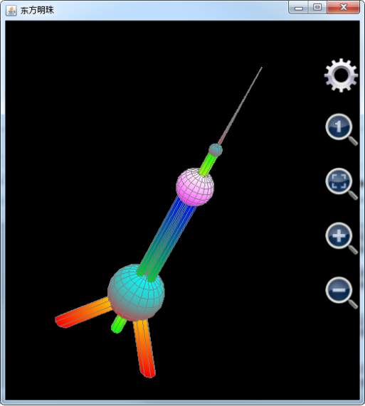
图20： 用plot3d函数绘制上海地标东方明珠电视塔。
Plot_3d_surfaces函数不但可以绘制曲面，还可以绘制曲线。注意，在绘制曲线的时候，u和v中只有一个能发挥作用，否则就是曲面了。比如要绘制一条螺旋线，半径为5，可以将u看作幅角，变化范围从-2*pi到2*pi，x的表达式为5*cos(u)，y为5*sin(u)，z为u，绘制语句为
Plot_3d_surfaces("spiralline", "Spiral Line", "x", "y", "z", "", true, "cyan", "cyan", null, "red", "red", null, "u", -2*pi, 2*pi, pi/50, "v", 0, 1, 1, "5 * cos(u)", "5 * sin(u)", "u")
螺旋曲线绘制结果如下：
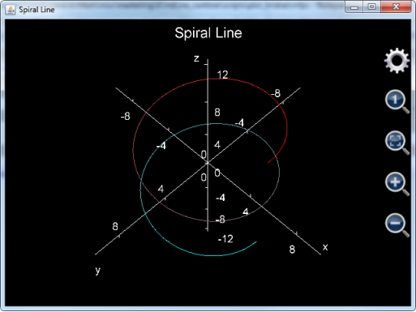
图21： 用plot_3d_surfaces函数绘制螺旋曲线。
这里需要注意几点：
第一点， 虽然绘制曲线时，只有u起作用，但是v最好不要随意设置，因为v的步数乘以u的步数就是最终要绘制点的个数。如果想要图形尽可能快地绘制出来，可以设置v从0到1步长为1，也就是只有一步；
第二点， 如果是绘制曲线，参数是否仅仅绘制网格需要为true，否则，曲线的颜色会变成和坐标轴一样的灰色而看不清楚；
第三点， 绘制上图所示的螺旋线，步数要足够多，否则就不够平滑，基于这个原因，上面的例子中步长为pi/50，也就是总共有200步。
Plot_3d_data则用于在三维坐标系中绘制数据图像。Plot_3d_data有两种调用方式，第一种调用方式仅仅输入一个参数，用于绘制一个曲面。该参数必须是一个二维矩阵，矩阵中的每一个元素都必须是实数，表示绘制出来的曲面上的一个点的z值，该元素在第一维的次序号对应于x值，在第二维的次序号对应于y值。比如：
Plot_3d_data([[7,5,3,6,10,14],[4,7,2,8,9,14],[4,3,9,2,9,15],[2,8,NaN,5,8,16],[-1,9,11,6,8,17],[-4,7,12,5,9,20]])
对应的绘制出的图形为（注意已经将图形旋转放大以便于观察）：
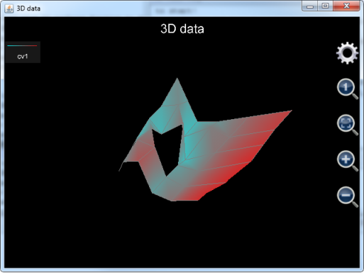
图22： 用plot_3d_data函数绘制单一曲面。
注意到曲面的中间有一个洞，这是因为曲面所对应的数据数组中有一个点的值为Nan，Nan是无法被绘制出来的，所以此点所在的位置形成了一个洞。
Plot_3d_data也可以用来同时绘制多个曲面。在这种情况下，每绘制一个曲面需要3个参数组成一个参数组。在一个参数组中，第一个参数必须是一个一维数组，参数中的元素值决定的决定曲面中各点的x值，第二个参数也必须是一个一维数组，参数中的元素值决定的决定曲面中各点的y值，第三个参数必须是一个二维矩阵，矩阵中的元素值决定每一个点的z值。注意第三个参数的第一维的长度必须和第一个参数的长度一致，第三个参数的第二维的长度必须和第二个参数的长度保持一致。
在工程上，工程师经常需要观察比较数据在三维中的分布情况，这时，就可以使用plot_3d_data函数同时绘制多个三维曲面。比如，在金融工程中，风险分析师经常需要分析一组期权产品的波动率曲面（Volatility surface），并根据波动率曲面来决定某一个期权的定价，可以用调用如下语句同时绘制两个波动率曲面 ：
plot_3d_data([48.000000, 50.000000, 52.000000, 54.000000, 56.000000, 58.000000, 60.000000, 62.000000, 64.000000, 66.000000, 68.000000, 70.000000, 72.000000, 74.000000, 76.000000, 78.000000, 80.000000, 82.000000, 84.000000, 86.000000, 88.000000, 90.000000, 92.000000, 94.000000, 96.000000, 98.000000, 100.000000, 105.000000], [30, 58, 121, 212, 576, 940], _ //曲面1的x，y坐标
[[NAN, NAN, NAN, NAN, NAN, NAN, NAN, NAN, 0.49508067351396218000, 0.45756582984888738000, 0.41913711426069727000, 0.37990131595995524000, 0.34996178524456606000, 0.30776619051400522000, 0.28462015821129766000, 0.27075500739772851000, 0.26301012549556918000, 0.24950232072545608000, 0.24019484695203744000, 0.23175291515931623000, 0.21112501922301888000, 0.20651763047720664000, 0.21070439806536975000, 0.22206990800626822000, 0.23691523835915387000, 0.26035129175640970000, NAN, 0.35693427858118065000], _
[NAN, NAN, NAN, NAN, NAN, NAN, NAN, NAN, NAN, 0.36859505107478957000, 0.34682167993243251000, 0.33284975263494410000, 0.32119915959842893000, 0.31050760053766019000, 0.29974406021726552000, 0.29453798692550298000, 0.28157889138027392000, 0.27318479365993703000, 0.26342709777494933000, 0.25752572211832075000, 0.24780946658943892000, 0.24166776632146400000, 0.23722978504246392000, 0.23195815505284242000, 0.22898424812758009000, 0.22833835748043799000, 0.23681894432023268000, 0.26478408970435013000], _
[NAN, NAN, NAN, NAN, NAN, NAN, NAN, 0.36447017097320361000, 0.35449192506546090000, 0.34516619206807542000, 0.34261461130215798000, 0.32635501530861477000, 0.32107173363018415000, 0.31233375990009160000, 0.30479530303155050000, 0.29817914152719677000, 0.29058822590764583000, 0.28282080501333134000, 0.27496574457106382000, 0.26851242637016437000, 0.26141077894592291000, 0.25587622110424685000, 0.25097496943207720000, 0.24646926304153294000, 0.24360994236677280000, 0.24074283746453087000, 0.23796452973380869000, 0.23534059389240872000], _
[0.42886625487784302000, 0.42275377605823883000, 0.41329219686969904000, 0.40460391970410370000, 0.39481551194770520000, 0.38291712255814248000, 0.37662551028641211000, 0.36478616087804611000, 0.36022367426251140000, 0.35255567514870667000, 0.34632136686091713000, 0.33619033083866695000, 0.32940848011458052000, 0.32550914476490195000, 0.31762251703077932000, 0.31380139485946612000, 0.30905226419037485000, 0.30338087644402684000, 0.29873679230470152000, 0.28685190784393211000, 0.28138845244953115000, 0.27662410367186036000, 0.27058634105931750000, 0.26931959970842401000, 0.26493899498451701000, 0.26164809336719214000, 0.25887643135300442000, 0.25318504482282400000], _
[NAN, NAN, NAN, NAN, NAN, NAN, NAN, 0.36501592858551429000, 0.36002318219714213000, 0.35559613466145090000, 0.34848867397787564000, 0.34653605316601327000, 0.34331817675589471000, 0.33758506685395551000, 0.33494376931090725000, 0.33249369924862260000, 0.32894957372789690000, 0.32563131380755028000, 0.32252394427107839000, 0.31590635444985415000, 0.31230809418058103000, 0.30891316532484459000, 0.30690810447495731000, NAN, NAN, NAN, NAN, NAN], _
[NAN, NAN, NAN, NAN, NAN, NAN, NAN, NAN, NAN, NAN, NAN, NAN, NAN, 0.35115605953314510000, 0.34821397817102240000, 0.34569662266907020000, 0.34358159686638989000, 0.34085234801142689000, 0.34839263577550034000, 0.33660760870094886000, 0.33959719768707108000, 0.33713092050360410000, 0.33603184408546544000, NAN, NAN, NAN, NAN, NAN]], _ //曲面1的波动率二维矩阵
[50.000000, 52.000000, 54.000000, 56.000000, 58.000000, 60.000000, 62.000000, 64.000000, 66.000000, 68.000000, 70.000000, 72.000000, 74.000000, 76.000000, 78.000000, 80.000000, 82.000000, 82.500000, 83.000000, 84.000000, 86.000000, 88.000000, 90.000000, 92.000000, 94.000000, 96.000000], [24, 52, 143, 233, 506, 877], _ //曲面2x和y坐标
[[NAN, NAN, NAN, NAN, NAN, NAN, NAN, NAN, NAN, NAN, NAN, NAN, NAN, 0.22964633802072443000, 0.18031707781034231000, 0.13034337245591013000, 0.11131700480412310000, NAN, 0.10619822668851642000, 0.10041352495351766000, 0.10939206628254365000, 0.14908566947743185000, 0.16602982367522820000, NAN, NAN, NAN], _
[NAN, NAN, NAN, NAN, NAN, NAN, NAN, NAN, NAN, NAN, NAN, 0.22540094145088913000, 0.19705350522103846000, 0.16395345741263651000, 0.14144557031336311000, 0.12637305801604665000, NAN, 0.11119409065181833000, NAN, NAN, NAN, NAN, NAN, NAN, NAN, NAN], _
[NAN, NAN, NAN, NAN, NAN, NAN, 0.25715041824992257000, 0.23621769883269250000, 0.21525558611698195000, 0.20045165924029371000, 0.18541707800373045000, 0.17359058112818165000, 0.16231450779286907000, 0.14916833017145850000, 0.13963488906422594000, 0.13177711734828756000, 0.12730661724897638000, NAN, NAN, 0.10557373569647757000, 0.10119196691910112000, 0.10116033427429517000, 0.10388742349750228000, 0.10620359931911844000, 0.11622872282660483000, 0.12972672550374550000], _
[NAN, NAN, NAN, NAN, NAN, NAN, NAN, 0.20352671403747510000, 0.19298953607665226000, 0.18372653703149414000, 0.17460337106727522000, 0.16855579275820740000, 0.16219673193089182000, 0.15533583755104832000, 0.15143304483201725000, 0.14966908624163464000, 0.14551826337243573000, NAN, NAN, 0.13133944009346873000, 0.12356296864493185000, 0.11899060584716444000, 0.11960170233648706000, 0.11951725172463327000, 0.11866793224195711000, 0.12167362000206712000], _
[0.24384524786557735000, 0.23533516044988553000, 0.22716883635794988000, 0.21453230778081070000, 0.21474513249393276000, 0.20918925878245592000, 0.20609984918018193000, 0.20191453785290187000, 0.19781979463707985000, 0.19448827786958967000, 0.19106299814050737000, 0.19227308566292306000, 0.18922818688715029000, 0.18886743252564508000, 0.18912087690028995000, 0.18990974472166203000, 0.19268838899006788000, NAN, NAN, 0.13665902914514916000, 0.13309865533237508000, 0.13053916709176369000, 0.12692797194421160000, 0.12528654150114951000, NAN, NAN], _
[NAN, NAN, NAN, NAN, 0.20896766837849659000, 0.20149697646213488000, NAN, NAN, NAN, NAN, NAN, 0.20549683791479759000, 0.20493999835449925000, 0.20823799582345237000, 0.21129319127054960000, 0.21169404646035919000, 0.19212457911706818000, NAN, NAN, 0.18574033886119370000, 0.17054792142025460000, NAN, NAN, NAN, NAN, NAN]]) // 曲面2的波动率二维矩阵
上述语句中，曲面1和2 的x和y坐标均为一个一维向量，其中，x表示期权的价值状态（Moneyness），y表示期权的有效期，z坐标则表示对应于某个价值状态和有效期的期权的理论波动率。注意，由于数据的问题，有时候计算出来的理论波动率是不合理的，对于这种坏的点，在金融分析上面必须舍弃，plot_3d_data所具有的忽略值为Nan的点的特征，正好能够实现这个要求，这就是我们看到z坐标的二维矩阵内部有很多Nan的原因。
上述语句最后绘制出的图像如下，需要注意的是，如果用户使用的是1.6.7版及其以后版本的可编程科学计算器，在图形刚刚绘制出来的时候，由于图形本身在x、y和z坐标轴上的跨度不成比例，看起来就像一条带子，用户无法观察波动率分布的细节。这时，用户需要点击红色方框中的自适应按钮，让软件自动调整x、y和z的比例，以便于观察，参见下图8.23：；如果用户使用的是1.6.6及其以前版本的可编程科学计算器，则无需点击自适应按钮，图像绘制出来的初始状态就是自适应x、y和z的比例。
调整后的图形参见下图8.24：，注意为了让两个波动率曲面正好位于图像正中，已经将z轴平移了-0.3。并且坐标轴已经被设置为显示，以方便用户看清x、y和z轴单位长度的比例。
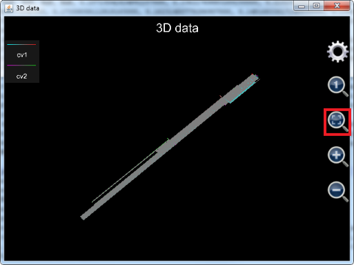
图23： 用plot_3d_data函数同时绘制两个波动率曲面（未经调整）。
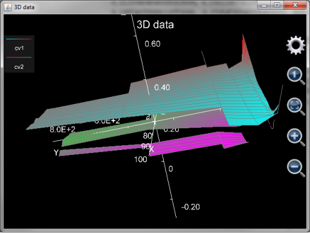
图24： 调整后的两个波动率曲面。
最后需要注意，plot_3d_data函数并不保存生成的图像，这和plot_2d_data是一样的。
Plot_multi_xyz则是非常底层的函数。这个函数和plot_3d_data一样是直接绘制数据，而不是根据表达式求得每个点的数据值然后加以绘制。Plot_3d_data直接调用这个函数（但也要对数据做一些转换）。而plot3d则是先将表达式的每一个数据点的值都计算出来，然后再调用plot_multi_xyz。
Plot_multi_xyz的第一个参数为基于字符串的图像的名字，也就是去掉扩展名.mfpc的图像文件名。
Plot_multi_xyz的第二个参数为图像的设置，这个参数是把所有的图像级别的设置放在一个字符串里面，每一个设置都基于
设置项目:设置项目的值;
的模式，然后将各个设置的首尾连接在一起。比如：
"chart_type:multiXYZ;chart_title:This is a graph;x_title:x axis;x_min:-24.43739154366772;x_max:24.712391543667717;x_labels:10;y_title:Y axis;y_min:-251.3514430737091;y_max:268.95144307370913;y_labels:10;z_title:Z axis;z_min:-1.6873277335234405;z_max:1.7896774628184482;z_labels:10"
，这里的chart_type是图形类型，必须为multiXYZ，chart_title为图像标题，x_title为图像x轴的名称，x_min为最开始显示x轴的范围的最小值，x_max为最开始显示x轴的范围的最大值，x_label表示x轴上有多少个刻度标记，y_title为图像y轴的名称，y_min为最开始显示y轴的范围的最小值，y_max为最开始显示y轴的范围的最大值，y_label表示y轴上有多少个刻度标记，z_title为图像z轴的名称，z_min为最开始显示z轴的范围的最小值，z_max为最开始显示z轴的范围的最大值，z_label表示z轴上有多少个刻度标记。
Plot_multi_xyz的第3个参数为一条曲线（面）的设置。这个参数是把所有的该曲线（面）的设置放在一个字符串里面，每一个设置都基于
设置项目:设置项目的值;
的模式，然后将各个设置的首尾连接在一起。比如：
"curve_label:cv2;is_grid:true;min_color:blue;min_color_1:cyan;min_color_value:-2.0;max_color:white;max_color_1:yellow;max_color_value:2.0"
，这里curve_label是曲线（面）标题，is_grid表示是否仅仅绘制网格，min_color表示正面Z坐标方向上最小值对应的颜色，min_color_1表示反面Z坐标方向上最小值所对应的颜色，min_color_value是最小的z值（注意，这个最小的z值不见得是曲面在Z坐标方向上的最小值，它只是定义了颜色的变化，也就是，图案中任何小于最小z值的部分都被涂以最小z值对应的颜色，图案中大于最小z值的部分的颜色从最小z值对应的颜色向最大z值所对应的颜色渐变。如果该值设置为null，则让软件自己寻找曲面或曲线的最小z值），max_color表示正面Z坐标方向上最大值对应的颜色，max_color_1表示反面Z坐标方向上最大值所对应的颜色，max_color_value是最大的z值（注意，这个最大的z值不见得是曲面在Z坐标方向上的最大值，它只是定义了颜色的变化，也就是，图案中任何大于最大z值的部分都被涂以最大z值对应的颜色，图案中小于最大z值的部分的颜色从最大z值对应的颜色向最小z值所对应的颜色渐变。如果该值设置为null，则让软件自己寻找曲面或曲线的最大z值）
Plot_multi_xyz的第4个参数为该曲线（面）上每一个点在x轴上的坐标，注意这个参数必须为一个二维数组，数组中的每一个元素必须是实数，和plot_3d_data一样，如果该元素是Nan，则曲线（面）的连接线将在该点断开。
Plot_multi_xyz的第5个参数为该曲线（面）上每一个点在y轴上的坐标，注意这个参数必须为一个二维数组，数组的尺寸和第四个参数必须一致，数组中的每一个元素必须是实数，和plot_3d_data一样，如果该元素是Nan，则曲线（面）的连接线将在该点断开。
Plot_multi_xyz的第6个参数为该曲线（面）上每一个点在z轴上的坐标，注意这个参数必须为一个二维数组，数组的尺寸必须和第四个以及第5个参数的尺寸相符合，数组中的每一个元素必须是实数，和plot_3d_data一样，如果该元素是Nan，则曲线（面）的连接线将在该点断开。
如果用户想要绘制不止一条曲线，则需要输入另外一组参数3，4，5和6。用户最多可以绘制1024条曲线，所以plot_multi_xyz最多支持2+1024*4等于4098个参数。
Plot_multi_xyz的例子如下：
plot_multi_xyz("chartII", "chart_type:multiXYZ;chart_title:This is a graph;x_title:x;x_min:-5;x_max:5;x_labels:6;y_title:Y;y_min:-6;y_max:6;y_labels:3;z_title:Z;z_min:-3;z_max:1;z_labels:4", "curve_label:cv1;min_color:blue;min_color_1:green;max_color:yellow;max_color_1:red", [[-4, -2, 0, 2, 4],[-4, -2, 0, 2, 4],[-4, -2, 0, 2, 4]], [[-5, -5, -5, -5, -5], [0, 0, 0, 0, 0], [-5, -5, -5, -5, -5]], [[-2.71, -2.65, -2.08, -1.82, -1.77], [-2.29, -2.36, -1.88, -1.45, -1.01], [-1.74, -1.49, -0.83, -0.17, 0.44]])
上述例子绘制的图像为一张类似于大致平放在x轴y轴所构成的平面上的纸，然后大致沿着x轴从正y轴方向向负y轴方向折叠，但并没有完全叠合起来。这个例子是为了展现plot_multi_xyz函数完全可以绘制扭曲的表面，甚至在该表面上同一个x，y坐标对应于两个不同的z值。
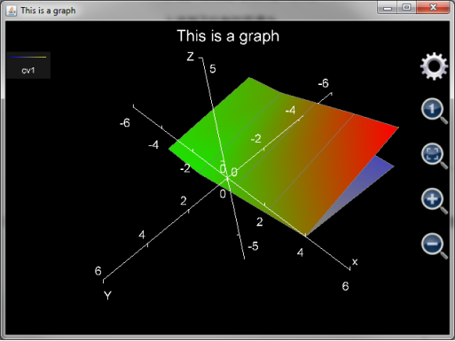
图25： 用plot_multi_xyz函数绘制折叠过的表面。
事实上，由于plot_multi_xyz函数只是对一组空间上的点进行绘图，而对这些点的x，y和z坐标没有要求，这意味着只要知道了图形的坐标点，用户可以在三维空间中绘制出任何想要的图形。
本教程文档详细介绍了调用MFP绘图函数进行绘图的方法。绘图函数可以分为2种。第一种是直接绘制表达式图形。用户在调用函数时无需输入变量变化范围，在图形生成之后，用户可以对绘图范围进行调整。这种绘图方法简单方便，但是代价是每次调整绘图范围都要部分或者全部重新计算每个绘制点的坐标，所以用户可能会感到时延。
第二种绘图函数是需要输入各个变量基于t（二维图形）或者u，v（三维图形）的变化表达式和变化范围。这样的绘图函数参数输入比较复杂，但是绘制图像完成之后，用户对图像进行拖拽或者缩放，不会有迟滞的感觉，此外，用这种绘图方式可以绘制出非常复杂的图形，比如北京的地标“鸟巢”和上海的地标“东方明珠”电视塔。从理论上讲，完全可以通过使用这些绘图函数绘制出任何用户想要的图形。